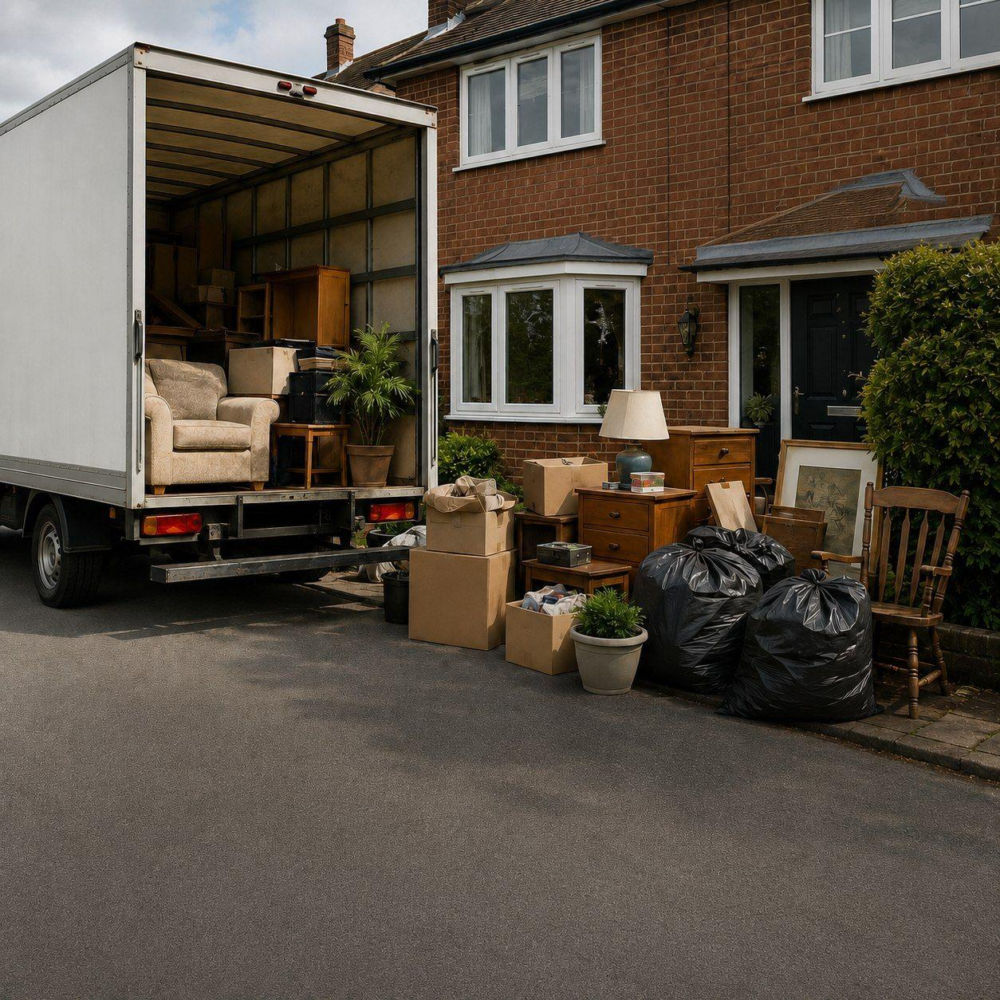

House clearance Camden
House clearance in Camden
House clearance and rubbish removal across Camden, including Camden Town, Kentish Town, Hampstead, Swiss Cottage and Holborn.
Fully insured · Free quotes · Often same day
What we clear
Homes and flats cleared across Camden
Looking for house clearance in Camden? TurnBright clears furniture, household junk, appliances and loft contents from flats and houses. Send photos for a free quote, then book a time that suits you.
- Furniture, beds and bulky items
- Household appliances
- Loft, shed and garage contents
- Mixed household rubbish
- Full house and flat clearances
- Probate and end-of-tenancy clear-outs

Why choose us
House clearance with TurnBright in Camden
Central and north Camden can be busy for vans, so we confirm access and parking with you first. We clear full homes, single rooms and probate properties, and we set aside documents or keepsakes when you ask us to.
Local areas
Areas we cover in Camden
We cover the London Borough of Camden. Send your postcode to confirm we can reach you.
All house clearance services · Rubbish removal · Areas we cover
Free house clearance quote
Need a house clearance in Camden? Send a few photos.
Tell us what needs to go, the floor level, access and your postcode.